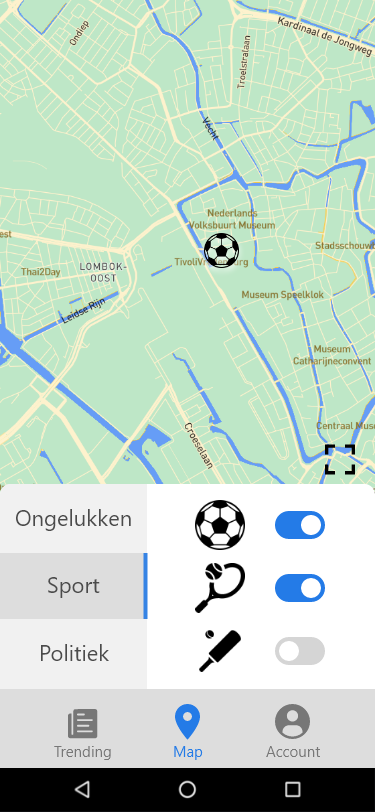
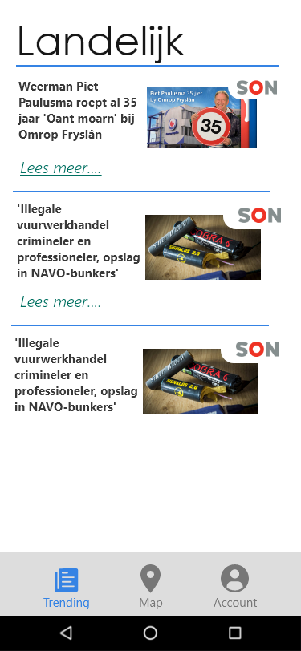
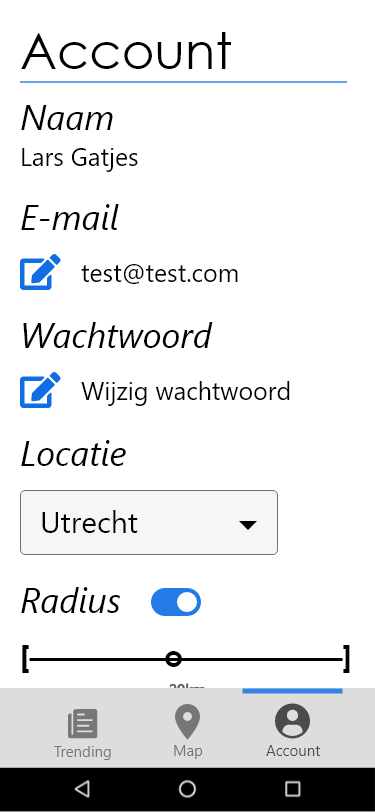
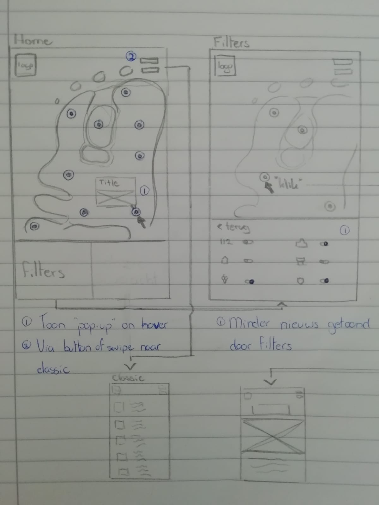

NieuwsRadar is an regional news app which focuses on the proximity of regional news items.
This is accomplished by showing news items on a map around the users position.
When a news item is clicked a pop-up will appear with a short summary and a link to the full article.
The user can set filters to see relevant articles.
Users can sign in to change their location and the size of the radius.
My role in the team was teamleader, designer and unofficial design lead.
As teamleader I spent a lot of time making sure everyone was busy and we would reach our goals.
As designer I designed the application and intergrated feedback from the users and dev team.
As design lead I communicated with the dev team, recieved their feedback and anwsered their questions about the design.
The app is a PWA. This means it can be build as a webapp and a native app.
It's coded using Angular and Ionic. We used Firebase to store the user accounts.
The design is made in Adobe XD.
GitHub
x
   